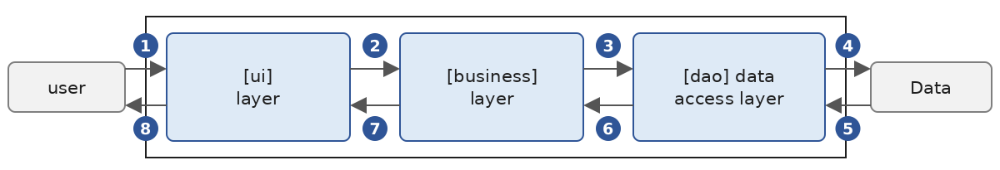
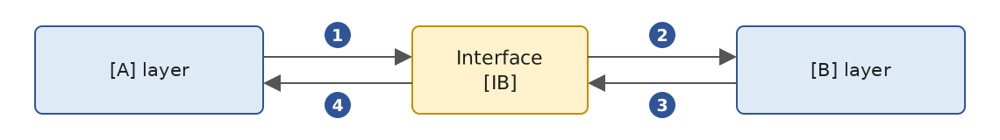

6. Arquitecturas en capas
6.1. Introducción
Retomemos la última versión de la aplicación de cálculo de impuestos (versión 3, capítulo 5). Reducido a lo esencial, su programa principal tenía la siguiente estructura (diagrama simplificado):
Este programa combina tres tipos de procesamiento presentes en la mayoría de las aplicaciones:
- la obtención de datos almacenados en archivos, bases de datos, etc.: líneas 1–9;
- la interacción con el usuario: líneas 13–14 (entrada) y 17 (salida);
- el uso de un algoritmo de negocio, el cálculo del impuesto: línea 17. Este cálculo lo realizaba antes la clase abstracta [AbstractTax], la clase padre de [FileTax] y [JsonTax]: en la versión 3, la lectura de datos y el cálculo todavía están combinados dentro de un solo objeto.
La experiencia práctica ha demostrado que aislar estos distintos pasos de procesamiento en clases separadas mejora la mantenibilidad de la aplicación. La arquitectura de una aplicación estructurada de este modo es la siguiente:

Esta arquitectura se denomina «arquitectura de tres niveles» (three-tier). El término «nivel» (tier) designa normalmente una parte de la aplicación que se ejecuta en una máquina distinta. Cuando las partes están en la misma máquina, se habla más bien de «arquitectura en capas»:
- La capa [business] contiene las reglas de negocio de la aplicación. En nuestra aplicación, son las reglas utilizadas para calcular el impuesto de un contribuyente. Esta capa necesita datos para funcionar:
- los tramos impositivos, que cambian cada año;
- el número de hijos, el estado civil del contribuyente y sus ingresos anuales;
- la capa de acceso a datos, o [dao] (DAO = Data Access Object), proporciona los datos ya almacenados en archivos o bases de datos. Esto incluye los tramos impositivos, como en la versión 3 de la aplicación;
- la capa de interfaz de usuario, o [ui] (UI = User Interface), proporciona los datos ingresados por el usuario y le muestra los resultados. Aquí se aplica al número de hijos, el estado civil y los ingresos anuales del contribuyente.
En general:
- la capa [dao] se encarga del acceso a datos persistentes (archivos, bases de datos) o no persistentes (red, sensores, etc.);
- la capa [ui] se encarga de las interacciones con el usuario, si lo hay;
- las tres capas se hacen independientes entre sí mediante el uso de interfaces.
Retomaremos la aplicación [Tax], que ya hemos examinado varias veces, para darle una arquitectura en capas. Primero, debemos definir las interfaces de las distintas capas de la aplicación.
6.2. Las interfaces de la aplicación [Tax]
Recuerde que una interfaz define un conjunto de firmas de funciones y propiedades. Las clases que implementan la interfaz proporcionan su implementación.
Volvamos a la arquitectura en capas de nuestra aplicación:
En este tipo de arquitectura, con frecuencia el usuario toma la iniciativa. El usuario hace una solicitud en [1] y recibe una respuesta en [8]. A esto se le llama ciclo de solicitud-respuesta. Tomemos el ejemplo del cálculo del impuesto de un contribuyente. Esto requerirá varios pasos:
- La capa [ui] pide al usuario su estado civil, su número de hijos y su salario anual. Esta es la operación [1] descrita anteriormente;
- Hecho esto, la capa [ui] le pide a la capa [business] que calcule el impuesto. Para ello, le envía los datos que recibió del usuario. Esta es la operación [2];
- La capa [business] necesita cierta información para realizar su tarea: los tramos impositivos. Solicita esta información a la capa [dao] por la ruta [3, 4, 5, 6]: [3] es la solicitud inicial y [6] es la respuesta a esa solicitud;
- Con todos los datos que necesitaba, la capa [business] calcula el impuesto;
- Ahora la capa [business] puede responder a la solicitud que le hizo la capa [ui] en [2]. Esta es la ruta [7];
- la capa [ui] da formato a este resultado y luego lo presenta al usuario. Esta es la ruta [8];
- Podría imaginarse que el usuario realiza simulaciones de impuestos y desea guardarlas. Para ello utilizaría la misma ruta, [1-8].
Como se ve en esta descripción, una capa utiliza los recursos de la capa que está a su derecha, nunca los de la que está a su izquierda. Consideremos dos capas adyacentes:

La capa [A] hace solicitudes a la capa [B]. En los casos más simples, una capa se implementa mediante una sola clase. Pero una aplicación evoluciona con el tiempo, y la capa [B] puede tener sucesivamente distintas clases de implementación: [B1], [B2], y así sucesivamente. Si la capa [B] es la capa [dao], puede tener una implementación inicial, [B1], que obtiene los datos de un archivo. Algunos años después, podría desearse almacenar esos datos en una base de datos: en ese caso, se crea una segunda clase de implementación, [B2]. Si, en la aplicación inicial, la capa [A] trabajaba directamente con la clase [B1], nos veríamos obligados a reescribir parcialmente el código de la capa [A]. Por ejemplo, supongamos que escribimos algo como lo siguiente en la capa [A]:
- Línea 1: se crea una instancia de la clase [B1];
- línea 3: se solicitan datos a esta instancia.
Si la nueva clase de implementación [B2] tiene funciones con la misma firma que la clase [B1], habrá que cambiar todas las instancias de [B1] por [B2]. Este es el mejor de los casos, y es bastante improbable si no se ha prestado atención a esas firmas. En la práctica, es común que las clases [B1] y [B2] tengan firmas de funciones diferentes, lo que significa que una parte importante de la capa [A] debe reescribirse.
Este problema se puede mitigar insertando una interfaz entre las capas [A] y [B]. Esto fija, dentro de una interfaz, las firmas de funciones que la capa [B] expone a la capa [A]. El diagrama anterior queda así:

La capa [A] ya no se comunica directamente con la capa [B], sino con su interfaz, [IB]. En el código de la capa [A], la clase de implementación [Bi] de la capa [B] aparece ahora una sola vez, cuando se crea el objeto que implementa la interfaz [IB]. Después de eso, se usa la interfaz [IB], y no su clase de implementación. El código anterior queda así:
- Línea 1: se crea una instancia de [ib] que implementa la interfaz [IB] mediante la instanciación de la clase [B1]. El tipo de la variable se declara explícitamente: sin ello, la inferencia de tipos le asignaría el tipo [B1] a [ib];
- Línea 3: se solicitan datos a la instancia [ib].
Ahora, si reemplazamos la implementación [B1] de la capa [B] por una implementación [B2], y ambas implementaciones se ajustan a la misma interfaz [IB], solo es necesario modificar la línea 1 de la capa [A]. Esta es una ventaja importante que, por sí sola, justifica el uso sistemático de interfaces entre dos capas.
Podemos ir aún más lejos y hacer que la capa [A] sea completamente independiente de la capa [B]. En el código anterior, la línea 1 plantea un problema porque codifica de forma fija el nombre de la clase [B1]. Lo ideal sería que la capa [A] recibiera una implementación de la interfaz [IB] sin tener que especificar el nombre de una clase. Esto sería coherente con el diagrama anterior: la capa [A] se comunica con la interfaz [IB], y no hay razón para que necesite conocer el nombre de la clase que implementa esa interfaz.
Esto es lo que permite la inyección de dependencias (DI). La arquitectura anterior evoluciona de la siguiente manera:

Un componente transversal, el contenedor de inyección de dependencias, crea los objetos que implementan las capas y los conecta entre sí: le pasa a la capa [A] una referencia al objeto que implementa la capa [B]. El código de la capa [A] adopta entonces la siguiente forma:
- Línea 2: la capa [A] recibe, mediante su constructor primario, una instancia [ib] que implementa la interfaz [IB]. La palabra clave
***[val]***que precede al parámetro lo convierte en una propiedad privada de la clase: donde Java requiere un campo, un constructor y una asignación, Kotlin requiere solo una línea. No es la capa*[A]* la que crea esta instancia, sino el contenedor; - Línea 6: se solicitan datos a la instancia [ib].
La clase de implementación [B1] ya no aparece en ninguna parte del código de la capa [A]. Cuando la implementación [B1] se reemplaza por una nueva implementación [B2], nada cambiará en el código de la capa [A]: lo único que cambiará es el único lugar de la aplicación donde se le indica al contenedor qué clase implementa [IB]. Este lugar incluso puede leer el nombre de la implementación que se debe usar desde un archivo de configuración.
En la JVM, la inyección de dependencias se popularizó a comienzos de la década de 2000 con el framework Spring, cuya configuración se escribía entonces en archivos XML. Spring Framework, ahora en su versión 7, sigue siendo el estándar de la industria y trata a Kotlin como un lenguaje de primera clase: ofrece extensiones de Kotlin para su API, y Kotlin es uno de los dos lenguajes usados en su documentación. Es la base de Spring Boot, que usaremos en el capítulo 13, «Servicios web». Usaremos su contenedor en la versión 5 de la aplicación (existen otros: CDI, el estándar de Jakarta EE, Google Guice o, específicos de Kotlin, Koin y Kodein). La combinación de «interfaces e inyección de dependencias» mejora considerablemente la mantenibilidad de las aplicaciones al hacer que las capas sean independientes entre sí.
Volvamos a la arquitectura en capas de nuestra aplicación. En casos simples, podemos comenzar por la capa [business] para descubrir las interfaces de la aplicación. Para funcionar, la aplicación necesita datos que:
- ya están disponibles en archivos, bases de datos o a través de la red. Estos datos los proporciona la capa [dao];
- todavía no están disponibles. En ese caso, los proporciona la capa [ui], que los obtiene del usuario.
¿Qué interfaz debe ofrecer la capa [dao] a la capa [business]? La capa [dao] debe proporcionar los tramos impositivos a la capa [business]. En nuestra aplicación, la capa [dao] utiliza datos existentes pero no crea datos nuevos. Su interfaz podría ser la siguiente:
- Línea 1: la interfaz se encuentra en el paquete [dao]. Como veremos, almacenaremos el archivo [ITaxDao.kt] en una carpeta [dao];
- Línea 9: la interfaz [ITaxDao] declara la propiedad [taxBrackets], que proporciona los tramos impositivos a la capa [business]. Una interfaz de Kotlin puede declarar propiedades, no solo funciones: una propiedad [val] de una interfaz es abstracta; cada clase que la implementa especifica cómo obtiene su valor. Mientras que Java exponía los datos de solo lectura mediante un método [getTaxBrackets()], siguiendo la convención JavaBeans, Kotlin lo declara como lo que es: una propiedad de solo lectura. Desde la perspectiva de Java, esta propiedad es en realidad un método [getTaxBrackets()];
- los tramos se devuelven como una lista [List<TaxBracket>] en lugar de un arreglo. En Kotlin, [List] es una interfaz de solo lectura: no tiene [add], [set] ni [remove], que pertenecen a la interfaz [MutableList] (capítulo 5). Por lo tanto, quien recibe la lista no puede modificarla, mientras que los elementos de un arreglo siempre pueden ser modificados por quien lo recibe;
- línea 3: importa el tipo [TaxBracket], definido en el paquete [entities]:
Un tramo impositivo se representa mediante una clase de datos ([data class], capítulo 4), el equivalente en Kotlin de un record de Java. El compilador genera las propiedades [limit], [coeffR] y [coeffN], así como las funciones [equals], [hashCode], [toString], [copy] y [component1]…[component3] (para la desestructuración). Escribimos [TaxBracket(limit, coeffR, coeffN)] para crear un tramo. Las propiedades se declaran como [val]: un tramo no puede modificarse una vez creado (una clase de datos puede tener propiedades [var], pero no es una práctica común). Las tres propiedades son de tipo [BigDecimal], la clase de Java para números decimales exactos, que Kotlin utiliza directamente: un [Double] no puede representar exactamente 0.068 ni 291.09. Dado que un *[BigDecimal] es en sí mismo inmutable, un tramo es completamente inmutable. Una clase con propiedades [var] habría permitido modificarlo; veremos que esta imposibilidad elimina un efecto secundario de una forma más antigua de escribir la capa [business]*.
¿Qué interfaz debe presentar la capa [business] a la capa [ui]? Repasemos las interacciones entre estas dos capas:
- La capa [ui] pide al usuario su estado civil, su número de hijos y su salario anual. Esta es la operación [1] del esquema;
- Hecho esto, la capa [ui] le pide a la capa [business] que calcule el impuesto. Para ello, le envía a la capa [business] los datos que recibió del usuario. Esta es la operación [2].
La interfaz de la capa [business] podría ser como sigue:
- Línea 1: todo lo relacionado con la capa [business] se coloca en el paquete [business];
- Línea 6: la interfaz [ITaxBusiness] declara una sola función, que calcula el impuesto de un contribuyente a partir de su estado civil, su número de hijos y su salario anual. Una función de interfaz sin cuerpo es abstracta y, como cualquier miembro de Kotlin sin modificador de visibilidad, es pública: no es necesario escribir [public abstract]. El resultado es [Int]: el impuesto en euros, sin los centavos.
Examinaremos ahora una primera implementación de esta arquitectura en capas.
6.3. Aplicación de ejemplo: versión 4
6.3.1. El proyecto
La versión 4 es un programa formado por varios archivos fuente que no utiliza ninguna biblioteca externa. Kotlin no tiene un equivalente simple del lanzador de código fuente de Java ([java Main.java]), que compila en memoria un programa de varios archivos y lo ejecuta: un programa de Kotlin de varios archivos se compila antes de ejecutarse. Por lo tanto, creamos un proyecto Gradle, [TaxV4], que es uno de los subproyectos de la compilación Gradle del capítulo (capítulo 2). La carpeta [06-architectures] contiene todos los proyectos del capítulo; su archivo [settings.gradle.kts] los enumera:
- líneas 3–6: el plugin que permite a Gradle descargar el JDK 25 por sí mismo si no lo encuentra en la máquina (capítulo 2);
- línea 8: el nombre del proyecto raíz;
- línea 11: los cinco subproyectos de este capítulo. Un subproyecto se identifica por su ruta, cuyos elementos se separan con dos puntos: [TaxV5:tax-dao] es el subproyecto de la carpeta [TaxV5/tax-dao]. Hablaremos de [DemoTests] y de los tres subproyectos de la versión 5 más adelante.
El archivo [build.gradle.kts] del proyecto raíz declara los plugins que usan los subproyectos, junto con sus versiones, sin aplicarlos:
- línea 4: el plugin de Kotlin para la JVM, versión 2.4.20. La referencia a [apply false] lo pone a disposición de los subproyectos, que lo aplicarán sin repetir su versión;
- línea 5: un plugin del compilador de Kotlin que la versión 5 necesitará para Spring. Lo explicaremos cuando llegue el momento.
El subproyecto [TaxV4] tiene la siguiente estructura de directorios. Cada capa ocupa una carpeta:
- La carpeta [entities] contiene los tipos comunes a las capas [ui], [business], y [dao] : la clase de datos [TaxBracket], la excepción [TaxException], y la enumeración [ErrorCode] de sus códigos de error;
- la carpeta [dao] contiene la interfaz y las clases de la capa [dao]. Utilizaremos dos implementaciones de la interfaz [ITaxDao]: la clase [HardwiredTax], cuyos datos están codificados de forma fija (versión 2), y la clase [FileTax], que lee los datos desde un archivo de texto (versión 3). La lectura de un archivo JSON, la otra opción de la versión 3, se tratará en la versión 5;
- la carpeta [business] contiene la interfaz y la clase de la capa [business];
- la carpeta [ui] contiene la clase de la capa [ui];
- el archivo [Main.kt] crea las capas y las vincula entre sí;
- el archivo [TaxData.txt] contiene los tramos impositivos que lee la implementación [FileTax] de la capa [dao]. Se encuentra en la raíz del subproyecto, que es el directorio actual del programa lanzado por Gradle.
En Java, los nombres de las carpetas importan: una clase del paquete [dao] debe estar ubicada en una carpeta llamada [dao]. Kotlin es más flexible: el paquete es el que declara la directiva [package] del archivo, sin importar la carpeta en la que se encuentre. Sin embargo, la convención, seguida por IntelliJ, IDEA y este curso, sigue siendo organizar los archivos en carpetas que reflejan los paquetes: un archivo del paquete [tax.dao] en una carpeta [tax/dao] (en un proyecto donde todos los paquetes comienzan con la misma raíz, simplemente se omiten las carpetas de esa raíz común). En cambio, los archivos [.class] que produce el compilador siempre se organizan por paquete: así es como la máquina virtual localiza las clases a partir de sus nombres completos.
El archivo [Main.kt] no tiene una directiva [package]: pertenece al paquete raíz, que no tiene nombre. Su función [main] se compila en la clase [MainKt], el nombre que el archivo de compilación del subproyecto asigna al plugin [application]:
- líneas 2–4: el subproyecto aplica el plugin de Kotlin, sin versión (que proporciona el proyecto raíz), y el plugin [application], que agrega la tarea [run];
- líneas 7–8: los datos del proyecto;
- líneas 14–21: la configuración del compilador, la misma que en los capítulos anteriores;
- líneas 25–27: la clase principal, [MainKt], sin nombre de paquete. Solo hay un programa en este subproyecto: la propiedad [main] de los capítulos anteriores es innecesaria;
- líneas 30–32: el programa lee desde el teclado;
- líneas 35–38: los programas lanzados por Gradle escriben su salida en
UTF-8para que los caracteres acentuados se muestren correctamente en Windows (capítulo 2).
A diferencia de Java, Kotlin permite importar una declaración del paquete raíz desde otro paquete nombrándola sin prefijo ([import declarationName]). La convención sigue siendo colocar allí solo el programa principal, que nadie importa.
Ejecute el programa desde la carpeta del capítulo con [gradlew -q :TaxV4:run]: la ruta [:TaxV4] hace referencia al subproyecto, y la tarea [run] se ejecuta con la carpeta del subproyecto como directorio actual. IntelliJ IDEA abre la carpeta [06-architectures] como un proyecto Gradle y ejecuta [Main.kt] al hacer clic en el triángulo verde junto a su función [main].
6.3.2. Entidades de la aplicación

Llamamos entidades a los tipos que atraviesan varias capas. Por lo general, son las clases que encapsulan los datos de la capa [dao]. Estas entidades suelen extenderse hasta la capa [ui]. Las entidades de la aplicación son la clase de datos [TaxBracket], que ya se presentó, y la excepción [TaxException], junto con la enumeración de sus códigos de error:
- línea 4: una enumeración ([enum class]). Como en Java, los valores de una enumeración son objetos (instancias únicas de la clase [ErrorCode]), y una enumeración puede tener propiedades y métodos;
- línea 5: los cinco códigos de error. El punto y coma que termina la lista es obligatorio cuando le siguen otros miembros. La propiedad [ordinal], heredada de la clase [Enum], devuelve la posición del valor en la lista: 0 para [ACCESS], 4 para [FIELD3];
- líneas 8–9: cada código se asocia con un bit. [bit] es una propiedad calculada: no tiene campo; su accesor, [get()], la calcula cada vez que se lee. Kotlin no tiene operadores de desplazamiento: [1 shl ordinal] («shift left», desplazamiento a la izquierda) equivale al [1 << ordinal] de Java, y es igual a 1, 2, 4, 8 y 16. Estas potencias de 2 se pueden combinar con la función infija [or] (el [|] de Java): el código [FIELD2.bit or FIELD3.bit] (8 + 16 = 24) significa que los campos 2 y 3 de una línea son incorrectos. El código de error de la excepción sigue siendo un entero simple, que pueden usar todas las implementaciones de la capa [dao];
- Líneas 11–14: la función [names] convierte en nombres los códigos contenidos en una cadena de bits: «FIELD2, FIELD3» para 24. No utiliza ningún valor específico del enum: se coloca en el companion object y se llama como un método estático de Java, [ErrorCode.names(24)]. La propiedad [entries] (Kotlin 1.9) es la lista de valores del enum; reemplaza a la función [values()], que crea un nuevo arreglo en cada llamada. [(code and it.bit) != 0] es verdadero si el bit correspondiente al valor de [it] está presente en [code] ([and] es el equivalente en Java de [&]). Los valores obtenidos por [filter] se ensamblan luego con [joinToString], usando el separador [", "] y una lambda que devuelve el nombre ([name]) de cada valor. El cuerpo de la función es una expresión: la función no tiene llaves, y su resultado sigue al signo [=].
- línea 5: una excepción específica de la aplicación deriva de la clase [RuntimeException]. En Kotlin, no se plantea la cuestión de elegir entre excepciones verificadas y no verificadas: el lenguaje no tiene excepciones verificadas (capítulo 3), ninguna función declara las excepciones que lanza y ningún llamador está obligado a capturarlas. Derivar de
*[RuntimeException]* en lugar de*[Exception]*sigue siendo la práctica estándar, ya que así se garantiza que el código Java vea la excepción de manera coherente; - líneas 6–10: el constructor primario tiene tres parámetros. [message] y [cause] son parámetros simples que se pasan al constructor de la clase padre (línea 11); [code], declarado como [val], es además una propiedad de solo lectura de la excepción. La causa (la excepción original, si la hay) será accesible mediante la propiedad [cause], heredada de [Throwable];
- líneas 8–10: gracias a los valores predeterminados de los parámetros, este único constructor reemplaza a los dos constructores de la versión en Java: uno con un mensaje y un código, y el otro con la causa además. Con argumentos con nombre, escribimos [TaxException(message, code = 2)] cuando no hay causa, y [TaxException(message, e, 1)] cuando la hay;
- línea 10: se permite la coma después del último parámetro («coma final», trailing comma); facilita agregar un parámetro;
- Una excepción es serializable (la clase [Throwable] implementa la interfaz [Serializable]). La versión en Java declaraba un campo [serialVersionUID] para evitar una advertencia de [javac -Xlint:all]; el compilador de Kotlin no emite esta advertencia, por lo que no declaramos este campo.
En esta versión, solo la clase [FileTax] de la capa [dao] lanza [TaxException].
6.3.3. La capa [dao]
Repasemos la interfaz de la capa [dao]:
Implementamos esta interfaz de dos maneras distintas. Primero, con la clase [HardwiredTax]:
- Línea 6: la clase [HardwiredTax] implementa la interfaz [ITaxDao]. En Kotlin, los dos puntos se usan tanto para la herencia de clases como para la implementación de interfaces: no existe la palabra clave [implements]. Observe que la interfaz se nombra sin paréntesis, mientras que una clase padre se nombra con los argumentos de su constructor ([RuntimeException(message, cause)]): una interfaz no tiene constructor;
- Líneas 9–16: la implementación de la propiedad de la interfaz. La palabra clave [override] es obligatoria: el compilador verifica que la propiedad realmente implemente un miembro de la interfaz, de forma similar a la anotación opcional de Java [@Override]. La propiedad se inicializa en su declaración mediante [listOf], que crea una lista de solo lectura. Nuevamente, se permite una coma después del último elemento;
- Líneas 20–22: una función privada que crea un tramo a partir de tres cadenas. Se declara a nivel de archivo, fuera de la clase: [private] la hace visible solo dentro del archivo [HardwiredTax.kt]. La función de extensión [toBigDecimal] de la biblioteca estándar convierte una cadena en [BigDecimal]; es el constructor [BigDecimal(String)]. Un [BigDecimal] construido a partir de una cadena es exacto: ["0.068".toBigDecimal()] es exactamente 0.068, mientras que un [BigDecimal] construido a partir de un [Double] hereda su imprecisión: [0.068.toBigDecimal()], que se obtiene convirtiendo el [Double] en cadena, efectivamente da 0.068, pero [(0.1 + 0.2).toBigDecimal()] da 0.30000000000000004. El tipo del resultado de la función, [TaxBracket], se infiere de la expresión que sigue al signo [=].
La interfaz [ITaxDao] también es implementada por la clase [FileTax], que lee los tramos impositivos desde un archivo de texto. El archivo [TaxData.txt] es el siguiente:
Cada línea describe un tramo impositivo con el formato [limit:coeffR:coeffN]. Los números se escriben con punto decimal, sin importar el idioma del sistema; esto garantiza que el archivo sea legible en todas las máquinas. Los valores son los del baremo fiscal de 2004 para los ingresos de 2003, conservados tal cual: se trata de un ejercicio. La clase [FileTax] es la siguiente:
- Líneas 3–7: Kotlin no tiene importaciones estáticas ([import static] de Java): la directiva estándar [import] importa por igual clases, valores de enum y funciones. Entonces escribimos [FIELD1] en lugar de [ErrorCode.FIELD1];
- líneas 13–15: las funciones del paquete [kotlin.io.path] (capítulo 5), que complementan las funciones de la API de Java y NIO;
- línea 19: el constructor primario recibe el nombre del archivo de tramos impositivos. Declarado como [val], este parámetro es también una propiedad pública de solo lectura, [fileName]: reemplaza al campo y al método [getFileName] de la versión en Java;
- línea 22: la propiedad de la interfaz. No se inicializa en su declaración: el compilador verifica que se le asigne un valor, una sola vez, en el siguiente bloque [init];
- líneas 24–39: el bloque [init] se ejecuta cuando se construye el objeto. Lee el archivo y luego extrae los tramos de él;
- líneas 26–34: en Kotlin,
[try]es una expresión: su valor es el de la última expresión del bloque[try]***(en este caso, la lista de líneas del archivo) o el del bloque[catch]. El bloque [catch] lanza una excepción: su tipo es [Nothing], el tipo de las expresiones que nunca devuelven un valor, y la variable [lines] tiene el tipo [List<String>]*; - línea 27: la función [Path] de [kotlin.io.path] crea la ruta del archivo; es equivalente a [Path.of]. Una ruta relativa es relativa al directorio actual;
- Líneas 28–29: si el archivo no existe, se lanza una [NoSuchFileException] (del paquete [java.nio.file]) con un mensaje explícito. Su constructor de tres parámetros recibe el nombre del archivo, el nombre de un posible segundo archivo (aquí, [null]) y el motivo del error. Sin esta verificación, la propia operación de lectura lanzaría una [NoSuchFileException], cuyo mensaje consistiría únicamente en el nombre del archivo;
- Línea 31: la función de extensión [readLines] lee todo el archivo en UTF-8 y devuelve una lista con sus líneas. Ella misma abre y cierra el archivo. Para un archivo grande, preferiríamos una lectura en flujo con [useLines];
- Líneas 32–34: todos los errores de entrada/salida provienen de [IOException]: archivo inexistente ([NoSuchFileException]), permisos insuficientes ([AccessDeniedException]), archivo que no está en formato UTF-8 ([MalformedInputException]), etc. El error se encapsula en una [TaxException] con el código [ACCESS]; la excepción original se conserva como causa (segundo argumento);
- líneas 37–39: la lectura de las líneas y su análisis son operaciones separadas, lo que no ocurría en Java. [withIndex] asocia cada línea con su índice (a partir de 0) en un objeto [IndexedValue] con las propiedades [index] y [value]; [filter] elimina las líneas vacías o formadas solo por espacios ([isNotBlank]) sin perder los índices de las demás; [map] transforma cada una de las líneas restantes en un tramo. La función lambda de [map] desempaqueta su parámetro [IndexedValue] en sus dos componentes, [(index, line)]. El número de línea, [index + 1], y la línea sin los espacios iniciales ni finales ([trim]) se pasan a la función [bracket]. El resultado de [map] es una [List] de solo lectura;
- línea 43: la función que devuelve el tramo descrito por una línea, o lanza una [TaxException] si la línea no es válida. Esta excepción no es una [IOException]: se devuelve tal cual al llamador;
- línea 45: la línea se divide con [split] usando la expresión regular [SEPARATOR]: el separador es un signo de dos puntos, que puede estar rodeado de espacios. Nota: en Kotlin,
***[split(":")]** con una cadena divide la propia cadena sin interpretarla como una expresión regular; para eso hay que pasar un objeto*[Regex]; - Líneas 46–47: una línea que no tiene tres campos no es válida. El código de error se pasa mediante un argumento con nombre, [code = LINE.bit]: no hay causa, y el parámetro [cause] conserva su valor predeterminado, [null];
- línea 50: conversión de los tres campos. [fields.map(::number)] aplica la función [number] a cada campo ([::number] es una referencia a función; véase el capítulo 7) y devuelve una lista de tres [BigDecimal?] valores, que la asignación por desestructuración distribuye en tres variables;
- líneas 51–57: si un campo es incorrecto, cada campo incorrecto agrega su bit al código de error mediante la función infija [or], y se lanza una [TaxException]. Su mensaje indica el número de línea y el contenido de la línea;
- línea 60: en este punto, el compilador sabe que [limit], [coeffR] y [coeffN] no son [null]; de lo contrario, el [if] anterior habría lanzado una excepción. Mediante la conversión inteligente (smart cast), estas variables de tipo [BigDecimal?] se tratan como [BigDecimal], el tipo que espera el constructor de [TaxBracket]: no hacen falta ni [!!] ni ninguna conversión;
- líneas 65–66: las dos expresiones regulares se crean una sola vez en el companion object, en lugar de en cada llamada. Se escriben como cadenas sin procesar (["""..."""]), donde no es necesario duplicar la barra invertida: [\s*] coincide con cero o más espacios;
- Líneas 69–70: conversión de un campo a [BigDecimal]. [NUMBER.matches(field)] verifica que toda la cadena coincida con la expresión regular [\d+(\.\d+)?]: uno o más dígitos, seguidos opcionalmente de un punto y más dígitos. Así, «0,191» se rechaza, al igual que cualquier número negativo. La función [toBigDecimal] no depende del idioma del usuario: siempre espera un punto decimal. En caso de error, la función devuelve [null], de ahí su tipo [BigDecimal?]. Podríamos haber usado [toBigDecimalOrNull], que devuelve [null] para una cadena no válida, pero que también acepta «-1» o «1e3».
6.3.4. La capa [business]
Repasemos la interfaz de esta capa:
Su implementación, [TaxBusiness], es la siguiente:
- Línea 8: la clase [TaxBusiness] implementa la interfaz [ITaxBusiness]. La capa [business] debe colaborar con la capa [dao]: por lo tanto, recibe, mediante su constructor primario, una referencia [dao] al objeto que implementa la interfaz [ITaxDao]. Este parámetro no se declara como [val]: solo se usa durante la construcción del objeto y no se convierte en una propiedad;
- Línea 11: al construirse el objeto, la capa [business] solicita los tramos impositivos a la capa [dao] una sola vez y los almacena en una propiedad privada de solo lectura. Su tipo, [List<TaxBracket>], se infiere. Observe que la capa [business] conoce la capa [dao] solo a través de su interfaz [ITaxDao]: no sabe si los tramos impositivos provienen del código, de un archivo o, más adelante, de una base de datos;
- línea 14: la implementación de la función de la interfaz, con la palabra clave obligatoria [override];
- líneas 16–17: la capa [business] no confía en sus llamadores. La función [require] de la biblioteca estándar (capítulo 3) lanza una [IllegalArgumentException] si la condición es falsa; el mensaje de la excepción lo calcula la lambda, que se ejecuta solo en caso de error. El mensaje identifica el parámetro incorrecto;
- líneas 19–21: el número de partes. [nbChildren.toBigDecimal()] convierte el entero en [BigDecimal]. Una clase de Java como [BigDecimal] no tiene operadores aritméticos, pero la biblioteca estándar de Kotlin los agrega mediante funciones de extensión marcadas con [operator] (capítulo 4): [a + b], [a - b] y [a * b] llaman a [add], [subtract] y [multiply], y [shares += HALF] se escribe en Java como [shares = shares.add(HALF)]. Dado que un [BigDecimal] es inmutable, cada operación devuelve un nuevo objeto: por eso [shares] es una variable ([var]). El número de hijos se multiplica por 0.5 en lugar de dividirse entre 2, por la razón que se indica más abajo: 3 hijos equivalen a 1.5 partes;
- líneas 24–25: la renta imponible y el cociente familiar. La división entre el número de partes puede dar un número infinito de decimales (por ejemplo, la división entre 3): sin un límite especificado, el método [divide] lanzaría entonces una [ArithmeticException]. [MathContext.DECIMAL128] limita el resultado a 34 dígitos significativos;
- Línea 28: buscamos el primer tramo cuyo umbral sea mayor o igual que el cociente familiar, entre todos los tramos excepto el último ([dropLast(1)]). [firstOrNull] devuelve el primer elemento que cumple la condición, o [null] si no hay ninguno; el operador Elvis [?:] reemplaza entonces [null] por el último tramo, [brackets.last()], cuyo límite (0) no se utiliza. La clase [BigDecimal] implementa la interfaz [Comparable]: Kotlin traduce [qf <= it.limit] a [qf.compareTo(it.limit) <= 0]. Esta línea reemplaza al bucle [for] y al [break] de la versión en Java;
- línea 30: el impuesto. La función [toInt()] de un [BigDecimal] (el método de Java [intValue()]) devuelve la parte entera del resultado;
- líneas 33–36: dos constantes, almacenadas en un companion object privado. No pueden declararse como [const]: solo pueden serlo los tipos primitivos y las cadenas.
Una nota sobre el operador [/]. La biblioteca estándar también define el operador [/] para [BigDecimal], pero este llama a [divide(other, RoundingMode.HALF_EVEN)]: el resultado tiene el mismo número de decimales que el dividendo. Así, [3.toBigDecimal() / BigDecimal.TWO] da 2, no 1.5, mientras que [3.toBigDecimal().divide(BigDecimal.TWO)] sí da 1.5. Por eso el código anterior evita este operador: multiplica por 0.5 y llama explícitamente a [divide] con un [MathContext]. Con las funciones de [BigDecimal], siempre es mejor saber exactamente qué hace una operación de división.
Un enfoque común en el pasado consistía en modificar, antes de la búsqueda, el límite del último tramo (algo como [brackets[brackets.size - 1].limit = qf + 1]) para que el bucle de búsqueda siempre se detuviera. Esta instrucción modificaba el arreglo proporcionado por la capa [dao]: un efecto secundario sobre datos compartidos por todas las capas. Aquí ya no podríamos escribir esto: la propiedad [limit] de un [TaxBracket] es de solo lectura, y la lista que contiene los tramos también lo es. El código moderno simplemente toma el último tramo cuando ningún límite es adecuado, sin modificar los datos que recibe.
6.3.5. La capa [ui]
En las versiones 2 y 3, la interfaz de usuario estaba escrita en el programa principal, a continuación de la creación del objeto de cálculo. La única diferencia era cómo se creaba este objeto. Ahora aislamos esta interfaz de usuario en la capa [ui], que conoce la capa [business] solo a través de su interfaz:
- Línea 6: el diálogo no tiene estado propio. En Java, creábamos una clase [final] con un constructor privado, que contenía solo miembros estáticos. Kotlin utiliza para este fin la declaración de objeto ([object], capítulo 4): [Dialog] es a la vez una clase y su única instancia, creada en el primer uso. Sus funciones se llaman como métodos estáticos: [Dialog.run(business)];
- líneas 9–10: la pregunta que se hace al usuario, una constante privada ([const val]);
- líneas 13–18: el mensaje de ayuda es una cadena sin procesar, delimitada por tres comillas. Puede abarcar varias líneas; [trimIndent] (capítulo 5) elimina la sangría común de las líneas, así como la primera y la última línea si están vacías: el texto no comienza ni termina con un salto de línea. El resultado de [trimIndent] se calcula en tiempo de ejecución: la cadena no puede declararse como [const];
- línea 24: la función [run] recibe la capa [business] en forma de su interfaz [ITaxBusiness]. No sabe nada de la clase que la implementa ni de la capa [dao];
- Líneas 27–28: la pregunta se muestra con [print], sin salto de línea, y luego [readlnOrNull] lee una línea del teclado. Esta devuelve [null] al final del flujo de entrada; la llamada segura a [?.trim()] también devuelve entonces [null], que el operador Elvis reemplaza por la cadena vacía: el final del flujo termina el diálogo igual que una línea vacía;
- línea 34: la línea ingresada se divide por espacios; la expresión regular [\s+] (uno o más espacios) ignora los espacios múltiples;
- líneas 40–41: en Kotlin, el operador [] (y [!=]) compara el contenido de las cadenas: llama a [equals]*. El operador *[=] es el que compara referencias. La trampa de Java, donde [==] compara referencias, no existe;
- líneas 46–54: el número de hijos y el salario deben ser enteros positivos o cero. [toIntOrNull] devuelve [null] si el campo no es un entero, y el operador Elvis reemplaza entonces [null] por -1. Un número negativo y una entrada no válida se rechazan así con la misma verificación. El método [integer] de la versión en Java, junto con sus variantes [try]/[catch] de [NumberFormatException], ha quedado obsoleto;
- línea 58: los parámetros son correctos: se solicita el cálculo a la capa [business]. La llamada se escribe directamente en la plantilla de cadena, entre [${...}].
6.3.6. Integración de las capas
Solo queda crear las capas y vincularlas entre sí. Esta es la función del programa principal [Main.kt]:
- líneas 1–9: el archivo no contiene una directiva [package]; sus importaciones especifican las clases de los otros cuatro paquetes;
- línea 14: la función [main] recibe los argumentos de la línea de comandos en el arreglo [args]. El argumento selecciona la implementación de la capa [dao]: [hardwired] para la clase [HardwiredTax]; en caso contrario, el nombre del archivo leído por la clase [FileTax], con [TaxData.txt] como valor predeterminado;
- línea 15: [firstOrNull] devuelve el primer argumento, o [null] si no hay ninguno, valor que el operador Elvis reemplaza por el nombre de archivo predeterminado;
- línea 16: la variable [business] se inicializa con una expresión [try]. Su tipo se declara explícitamente: es la interfaz [ITaxBusiness], y no la clase [TaxBusiness] que produciría la inferencia;
- línea 18: creación de la capa [dao]. [if] es una expresión: su valor es una u otra de las dos implementaciones. Este es el único lugar del programa donde se nombran las clases [HardwiredTax] y [FileTax] ;
- línea 20: creación de la capa [business], que recibe la capa [dao]. Esta es la última expresión del bloque [try]y, por lo tanto, su valor;
- líneas 21–26: la creación de la capa [dao] puede lanzar una [TaxException]. Entonces se muestra un error, junto con el mensaje de la excepción original (si existe), y el programa termina con el código de salida 1. El código de error se muestra en texto legible mediante la función [ErrorCode.names]. Si [e.cause] no es [null], [let] construye la descripción de la excepción original; de lo contrario, el operador Elvis devuelve una cadena vacía;
- línea 26: la función [exitProcess] de la biblioteca estándar llama a [System.exit]. Su tipo de retorno es [Nothing]: el compilador sabe que nunca devuelve el control y, por lo tanto, que el bloque [catch] no produce ningún valor. Así, la expresión [try] tiene el tipo [ITaxBusiness]. La versión en Java tuvo que agregar una instrucción [return] (que nunca se ejecuta) después de [System.exit(1)], para que el compilador reconociera que la variable [business] había sido inicializada;
- línea 30: las capas están listas: la capa [ui] interactúa con el usuario.
6.3.7. Ejecuciones
Desde la carpeta del capítulo, con el archivo [TaxData.txt] (implementación [FileTax]) y probando la validación de los datos ingresados por el usuario (en los resultados de este capítulo, los datos del usuario se proporcionaron al programa mediante redirección de entrada y luego se colocaron después de las preguntas, donde el usuario los escribe):
Con la implementación [HardwiredTax]. Los argumentos del programa se pasan mediante la opción [--args] de la tarea [run]:
Con un archivo que no existe:
El código de error es [ACCESS] y se muestra el mensaje de la excepción original, [NoSuchFileException]: consiste en el nombre del archivo, seguido del motivo proporcionado a su constructor. El programa termina con el código de salida 1: Gradle informa entonces del fallo de la tarea [run] con algunas líneas adicionales que no reproduciremos aquí.
Con el siguiente archivo, [TaxDataInvalid.txt], donde la línea 3 está escrita con comas decimales:
se obtiene:
Los campos 2 y 3 de la línea 3 son incorrectos: el código de error combina los bits de [FIELD2] y [FIELD3], y la función [ErrorCode.names] lo muestra como “FIELD2, FIELD3.”
6.3.8. Conclusión
La arquitectura en capas y el uso de interfaces han aportado cierta flexibilidad a nuestra aplicación. Esto se evidencia en la forma en que el programa principal crea las capas [dao] y [business]:
Cambiar la implementación de la capa [dao] solo afecta a la línea 2. Una vez creadas las capas, el código de la capa [ui] es el mismo en ambos casos: allí la capa [business] se manipula a través de su interfaz [ITaxBusiness], y no a través de su clase de implementación.
La misma flexibilidad se observa en la capa [business]: se construye a partir de una referencia a la interfaz de la capa [dao]. Por lo tanto, cambiar la implementación de esta última no tiene ningún impacto en la capa [business]. Por eso nuestra única clase [TaxBusiness] pudo funcionar sin modificaciones con dos implementaciones distintas de la capa [dao].
6.4. Aplicación de ejemplo - Versión 5

Esta nueva versión se basa en la anterior, con los siguientes cambios:
- Las capas [dao] y [business] se colocan cada una en un subproyecto de Gradle que produce una biblioteca (un archivo JAR) y se prueban con el framework de pruebas unitarias JUnit;
- La capa [dao] recibe una tercera implementación, [JsonTax], que lee los tramos del impuesto desde un archivo JSON mediante la biblioteca Jackson;
- La integración de las capas la realiza el contenedor de inyección de dependencias de Spring, y la implementación de la capa [dao] se selecciona desde un archivo de configuración.
En los proyectos grandes, varios desarrolladores trabajan en la misma aplicación. Las arquitecturas en capas facilitan esta forma de trabajo: como las capas se comunican entre sí mediante interfaces bien definidas, un desarrollador que trabaja en una capa no tiene que preocuparse por el trabajo de otros desarrolladores en otras capas. Solo se requiere que todos respeten las interfaces.
Así, para probar la capa [business], el desarrollador necesita una implementación de la capa [dao]. Hasta que esa implementación esté terminada, el desarrollador puede usar una implementación ficticia de la capa [dao], siempre que respete la interfaz [ITaxDao]. Esta es otra ventaja de la arquitectura en capas: un retraso en la capa [dao] no impide probar la capa [business] . La implementación simulada (mock) también tiene la ventaja de ser mucho más sencilla de configurar que la capa [dao] real, que puede requerir un DBMS, conexiones de red, etc.
Una vez que la capa [dao] está terminada y probada, se entrega a los desarrolladores de la capa [business] en forma de biblioteca (un archivo JAR) en lugar de código fuente para copiar. Finalmente, la aplicación se entrega como un programa principal (el de la capa [ui]) y bibliotecas de clases (las demás capas).
6.4.1. Los subproyectos de Gradle de la versión 5
La versión 5 consta de tres subproyectos de la compilación de Gradle del capítulo, uno por capa, ubicados en la carpeta [TaxV5]. Las pruebas no forman un proyecto aparte: la convención de Gradle (la misma de Maven) coloca las pruebas de un subproyecto en su carpeta [src/test/kotlin]. Gradle las compila y las ejecuta, pero no forman parte del archivo JAR del subproyecto. Esto da como resultado la siguiente estructura de directorios:
Los paquetes ahora tienen el prefijo [tax]: [tax.entities], [tax.dao], [tax.business], [tax.ui]. De hecho, los subproyectos [tax-dao] y [tax-business] serán reutilizados por otros proyectos (capítulos 10 a 13), y dos bibliotecas usadas por el mismo programa no deben definir dos clases con el mismo nombre completamente calificado. En los proyectos profesionales, los paquetes llevan como prefijo el nombre de dominio invertido de la organización ([org.springframework], [tools.jackson]…), lo que garantiza nombres únicos.
La carpeta [TaxV5] en sí no tiene un archivo de compilación: es una simple carpeta de agrupación, que Gradle trata como un proyecto vacío, [:TaxV5], padre de los tres subproyectos [:TaxV5:tax-dao], [:TaxV5:tax-business] y [:TaxV5:tax-ui] declarados en el archivo [settings.gradle.kts] de este capítulo. Mientras que Maven requiere un proyecto padre para agrupar módulos, Gradle solo necesita este archivo. Cada subproyecto tiene su propio archivo [build.gradle.kts], que veremos junto con su capa. Estos archivos repiten algunas líneas (el repositorio Maven Central, la configuración del compilador y la configuración de las pruebas); en un proyecto más grande, factorizaríamos estas líneas en un plugin de convención (carpeta [buildSrc]) y consolidaríamos las versiones de las bibliotecas en un catálogo de versiones ([gradle/libs.versions.toml]).
La aplicación se compila y se prueba con el siguiente comando, ejecutado en la carpeta del capítulo:
Gradle compila cada subproyecto, compila y ejecuta sus pruebas y luego crea su archivo JAR en la carpeta [build/libs] del subproyecto; por ejemplo, [TaxV5/tax-dao/build/libs/tax-dao-5.0.jar]. Los subproyectos se procesan en el orden que dictan sus dependencias: [tax-dao], luego [tax-business], y después [tax-ui]. Si una prueba falla, la compilación se detiene. El comando [gradlew :TaxV5:tax-business:build] compila únicamente el subproyecto [tax-business]… y aquellos de los que depende: Gradle sabe que [tax-business] necesita [tax-dao] y compila este último primero si ha cambiado (sin ejecutar sus pruebas). A diferencia de Maven, no hay un repositorio local que deba mantenerse actualizado mediante un comando [install]: dentro de una compilación, los subproyectos son visibles entre sí directamente.
Las aplicaciones de los capítulos 10 a 13 reutilizarán las capas de la versión 5 sin copiar su código fuente. Su archivo [settings.gradle.kts] incluirá la compilación del capítulo 6 como una compilación compuesta:
y sus archivos [build.gradle.kts] declararán dependencias de [examples.tax:tax-business:5.0] y, para el objeto [Dialog], de [examples.tax:tax-ui:5.0], tal como lo harían para Jackson o Spring:
Gradle reconoce los subproyectos con estas coordenadas (grupo [examples.tax], nombre del subproyecto, versión [5.0]) en la compilación incluida y los usa en lugar de una biblioteca descargada: los compila según sea necesario, y un cambio en la versión 5 se refleja de inmediato en las versiones posteriores. Por eso los tres subproyectos declaran el grupo [group = "examples.tax"] y la versión [version = "5.0"].
6.4.2. La capa [dao]
El subproyecto [tax-dao] contiene la capa [dao] y las entidades de la aplicación. Su archivo [build.gradle.kts] es el siguiente:
- Líneas 2–5: el subproyecto aplica el plugin de Kotlin y el plugin [java-library], que es el plugin para bibliotecas. Este último, proporcionado por Gradle, se escribe con acentos graves porque su nombre contiene un guion. Agrega la configuración de dependencias [api], que el subproyecto [tax-business] utilizará;
- líneas 9–10: las coordenadas de la biblioteca, [examples.tax:tax-dao:5.0];
- línea 18: la biblioteca Jackson 3, que lee el archivo JSON. Se declara con [implementation]: es un detalle interno de la capa [dao], cuyos tipos no aparecen en su interfaz pública. Un proyecto que depende de [tax-dao] tendrá Jackson disponible en tiempo de ejecución, pero no podrá usar sus clases en su propio código;
- líneas 20–23: las dependencias de prueba, que presentaremos junto con las pruebas. Las configuraciones [testImplementation] y [testRuntimeOnly] se usan únicamente para compilar y ejecutar las pruebas: no forman parte de las dependencias de la biblioteca generada;
- líneas 26–31: la configuración del compilador. Jackson usa los nombres de parámetros conservados en el código compilado para asignar las propiedades del JSON a los parámetros del constructor de [TaxBracket], y JUnit los usa para mostrar las pruebas parametrizadas;
- líneas 35–38: la configuración de la tarea [test], que presentaremos junto con las pruebas;
- líneas 43–45: una tarea adicional, [trial], de tipo [JavaExec] (ejecución de una clase Java), que lanza el programa de prueba presentado más adelante. Este programa se almacena junto con las pruebas: su classpath ([classpath]) es, por lo tanto, el de las pruebas, [sourceSets["test"].runtimeClasspath], que incluye las clases principales, las clases de prueba y todas las dependencias;
- Líneas 48–51: los programas lanzados por Gradle escriben su salida en UTF-8 para que los caracteres acentuados se muestren correctamente en Windows (capítulo 2).
6.4.2.1. Las entidades
La clase de datos [TaxBracket] proviene de la versión 4 (paquete [tax.entities]). La enumeración [ErrorCode] se elimina, y la excepción [TaxException] pasa a ser la excepción de toda la aplicación, sin importar qué capa la invoque:
- línea 10: el código de error sigue siendo un simple entero: cada implementación de la capa [dao] define sus propios códigos. Su valor predeterminado, 0, significa “sin código”;
- líneas 6–10: gracias a los valores predeterminados, este único constructor acepta las cuatro formas de llamada para las que la versión en Java tenía cuatro constructores: [TaxException(message)], [TaxException(message, cause)], [TaxException(message, code = 2)] y [TaxException(message, cause, 2)]. Cuando se proporciona el código sin una causa, debe indicarse por nombre: sin el nombre, el compilador intentaría pasar el entero al parámetro [cause]. También se podría implementar la clase con un constructor secundario ([constructor(message: String, code: Int) : this(message, null, code)]), pero el argumento con nombre hace que la llamada sea más legible.
6.4.2.2. La implementación [FileTax]
La interfaz [ITaxDao] y la clase [HardwiredTax] son las de la versión 4. La clase [FileTax] solo se diferencia en la forma de escribir sus códigos de error:
- líneas 3–7: los códigos de error, que antes estaban en la enumeración [ErrorCode] del paquete de entidades, se han convertido en constantes de la clase [FileTax]: en efecto, son códigos específicos de esta implementación de la interfaz [ITaxDao] ([JsonTax] tiene los suyos). Kotlin no tiene miembros estáticos: las constantes de clase se declaran en su objeto complementario (companion object), con la palabra clave [const], que las convierte en constantes de tiempo de compilación (el equivalente de un campo Java [static final]). Se escriben como [FIELD1] dentro de la clase y como [FileTax.FIELD1] fuera de ella. Las importaciones de los valores de [ErrorCode] de la versión 4 ya no son necesarias.
Al inicio de la clase:
- línea 3: el error de acceso al archivo se encapsula en una [TaxException], con la causa y el código [ACCESS];
- línea 16: una línea que no tiene tres campos lanza una excepción con el código [LINE];
- Líneas 22–25: los códigos son enteros que se combinan directamente con la función infija [or].
6.4.2.3. La implementación [JsonTax]
Al igual que la versión 3 del capítulo 5, la tercera implementación de la capa [dao] lee los tramos del impuesto desde un archivo JSON mediante la biblioteca Jackson. El archivo [TaxData.json] es el siguiente:
La clase [JsonTax] es la siguiente:
- Línea 14: al igual que [FileTax], la clase recibe el nombre del archivo, que se convierte en la propiedad [fileName];
- Líneas 21–28: el archivo se lee como en [FileTax]. La función de extensión [readText] lee el archivo completo, en UTF-8, en una cadena. Un error de E/S da lugar a una [TaxException] con el código [ACCESS];
- Líneas 32–35: deserialización (capítulo 5). [JsonMapper.builder().build()] crea el objeto de Jackson que convierte JSON en objetos, y su método [readValue] lee el texto JSON como un arreglo de [TaxBracket]. El tipo arreglo se escribe como [Array<TaxBracket>::class.java]: [::class] especifica la clase de Kotlin ([KClass]) del tipo, y [.java] especifica la clase Java correspondiente, que es la que Jackson espera. Para crear cada tramo, Jackson llama al constructor de la clase de datos [TaxBracket], asignando las propiedades JSON [limit], [coeffR] y [coeffN] a los nombres de sus parámetros, que se conservan gracias a la opción del compilador [javaParameters] . Los números JSON se convierten a [BigDecimal], el tipo del parámetro, sin pasar por un [Double]: la conversión es exacta. Un error de sintaxis o de contenido provoca una [JacksonException], encapsulada en una [TaxException] con el código [FORMAT];
- línea 37: [readValue] es un método de Java: Kotlin no sabe si puede devolver [null] y asigna a su resultado un tipo de plataforma (denotado [Array<TaxBracket>!] en los mensajes del compilador), que puede tratarse como anulable o como no anulable. En realidad devuelve [null] si el archivo contiene el texto JSON [null]: la llamada segura [?.toList()] y el operador Elvis transforman este caso en una [TaxException] con el código [FORMAT]. En caso contrario, [toList] convierte el arreglo en una lista de solo lectura;
- Líneas 42–43: los códigos de error de esta implementación.
El capítulo 5 mencionó la existencia del módulo [jackson-module-kotlin], que informa a Jackson sobre las características específicas de Kotlin (valores predeterminados de parámetros, tipos anulables), y de la biblioteca kotlinx.serialization de JetBrains. Nuestra sencilla clase de datos no los necesita.
6.4.2.4. Un programa de prueba
Antes de escribir pruebas automatizadas, realicemos una primera prueba visual de la capa [dao]. El programa [TrialDao.kt] muestra los tramos proporcionados por las tres implementaciones. Lo hemos colocado en las fuentes de prueba del subproyecto ([src/test/kotlin]): no se incluirá en el archivo JAR de la capa [dao]:
- línea 6: una función [main] de nivel superior y sin parámetros en el paquete [tax.dao]: su clase es [tax.dao.TrialDaoKt]. Al estar en el mismo paquete que las clases probadas, el programa las usa sin importarlas;
- línea 8: una lista de las tres implementaciones de la interfaz [ITaxDao]. El compilador infiere el tipo más específico común a los tres elementos: [List<ITaxDao>];
- línea 10: [dao::class] devuelve la clase real del objeto, cuyo nombre (sin el paquete) es [simpleName];
- línea 11: cada tramo se pasa a la función [println] (referencia a función [::println]), que lo muestra mediante su función [toString], generada por el compilador para una clase de datos;
- líneas 13–16: manejo de una posible [TaxException].
El programa se ejecuta con la carpeta del subproyecto [tax-dao] como carpeta actual, mediante la tarea [trial] declarada en el archivo de compilación:
Las tres implementaciones devuelven los mismos tramos. La función [toString] de una clase de datos muestra el nombre de la clase seguido de sus propiedades entre paréntesis (un record de Java las mostraba entre corchetes); la función [BigDecimal] siempre escribe un punto decimal, sea cual sea el idioma del usuario. En IntelliJ IDEA, el programa también se lanza mediante el triángulo verde ubicado delante de su función [main].
6.4.3. La capa [business]
El archivo [build.gradle.kts] del subproyecto [tax-business] es el siguiente:
- Línea 18: la capa [business] usa la capa [dao]. La notación [project(":TaxV5:tax-dao")] hace referencia a otro subproyecto de la estructura mediante su ruta. La dependencia se declara con [api] y no con [implementation]: la interfaz [ITaxDao] aparece en la API pública de la capa [business], ya que el constructor de [TaxBusiness] recibe un [ITaxDao]. Por lo tanto, un proyecto que depende de [tax-business] debe poder usar los tipos de [tax-dao] en su código: con [api], los recibe automáticamente, sin tener que declarar por sí mismo la dependencia de [tax-dao]. Jackson, declarado con [implementation] en [tax-dao], solo se incluye en tiempo de ejecución;
- líneas 42–44: la tarea [trial] de este subproyecto;
- líneas 47–50: los programas lanzados por Gradle escriben su salida en UTF-8, para que los caracteres acentuados se muestren correctamente en Windows (capítulo 2).
La interfaz [ITaxBusiness] y la clase [TaxBusiness] son las de la versión 4 (paquete [tax.business]). El programa de prueba [TrialBusiness.kt], ubicado en las fuentes de prueba del subproyecto, realiza algunos cálculos de impuestos:
- línea 10: creación de las capas [dao] y [business]. La capa [dao] se implementa con la clase [FileTax]. Como el programa se ejecuta en la carpeta [tax-business], la ruta relativa [../tax-dao/TaxData.txt] hace referencia al archivo de datos del subproyecto [tax-dao];
- Líneas 11–14: llamadas repetidas a la única función de la interfaz [ITaxBusiness].
Resultados:
Una pareja casada con 2 hijos y una persona soltera con 3 hijos tienen el mismo número de partes (3): sus impuestos son iguales.
6.4.4. Pruebas unitarias con JUnit
6.4.4.1. El principio
Las pruebas realizadas hasta ahora se basaban en la verificación visual: comprobábamos que la pantalla mostrara los resultados esperados. Este método es poco práctico cuando hay muchas pruebas que ejecutar: los humanos son propensos a la fatiga, y su capacidad para verificar resultados disminuye a medida que avanza el día. Por lo tanto, las pruebas deben automatizarse y no requerir ninguna intervención humana.
Una aplicación evoluciona con el tiempo. Con cada actualización, debemos verificar que no “regrese” a un estado anterior; es decir, que siga superando las pruebas de funcionalidad realizadas durante su desarrollo inicial. Estas pruebas se denominan pruebas de no regresión. Una aplicación de tamaño moderado puede requerir cientos de pruebas: de hecho, se prueba cada función de cada clase de la aplicación. Estas se denominan pruebas unitarias.
Se han desarrollado frameworks de pruebas para automatizar estas pruebas. Para la JVM, el framework de referencia es JUnit, creado a finales de la década de 1990 por Kent Beck y Erich Gamma. Puede usarse tanto en Kotlin como en Java. Usamos la versión 6, publicada en septiembre de 2025 (aquí, la versión 6.0.3); su API, la del paquete [org.junit.jupiter.api], es la misma que la de JUnit 5, también conocido como JUnit Jupiter. Kotlin agrega su propia biblioteca de pruebas, kotlin.test: un conjunto de aserciones escritas para Kotlin ([assertEquals], [assertFailsWith], [assertIs]…), que delegan su trabajo en el framework de pruebas utilizado, en este caso JUnit. Las pruebas se ejecutan con el comando [gradlew test] desde la línea de comandos: esto es lo que permite lanzarlas automáticamente, por ejemplo, cada vez que se envían cambios de código a un servidor de integración continua. IntelliJ IDEA también las ejecuta y muestra sus resultados en una estructura de árbol. Kotest es otro framework de pruebas, escrito para Kotlin, que funciona con el mismo principio.
6.4.4.2. Un primer ejemplo
Examinemos el principio de las pruebas con JUnit mediante un ejemplo. El subproyecto [DemoTests] contiene solo pruebas, ubicadas en la carpeta [src/test/kotlin/demotests]. Su archivo [build.gradle.kts] es el siguiente:
- Líneas 2–3: el plugin de Kotlin; eso es todo: el proyecto no tiene programa principal;
- línea 15: la biblioteca kotlin.test. La notación [kotlin("test")] hace referencia al artefacto [org.jetbrains.kotlin:kotlin-test], en la versión del plugin de Kotlin. Cuando la tarea [test] usa la plataforma JUnit (línea 35), el plugin de Kotlin agrega automáticamente el adaptador que vincula las aserciones de kotlin.test con las de JUnit;
- Línea 17: JUnit consta de varios módulos (la API, el motor, las pruebas parametrizadas, la plataforma, etc.), que deben tener versiones compatibles. Su lista de materiales (BOM), [junit-bom], especifica las versiones de todos estos módulos: las dependencias siguientes se declaran sin versión;
- línea 19: el artefacto [junit-jupiter] combina el artefacto de la API de pruebas ([@Test], [@BeforeEach]…), el artefacto de pruebas parametrizadas y el motor Jupiter que las ejecuta;
- línea 21: el lanzador de la plataforma JUnit, mediante el cual Gradle inicia las pruebas. Solo se requiere en tiempo de ejecución ([testRuntimeOnly]);
- línea 29: el compilador conserva los nombres de los parámetros de las funciones, que JUnit muestra para las pruebas parametrizadas;
- Líneas 33–43: la configuración de la tarea [test]. [useJUnitPlatform()] le indica que ejecute las pruebas con la plataforma JUnit. De forma predeterminada, Gradle muestra solo las pruebas fallidas y un resumen; [events("passed", "skipped", "failed")] le indica que informe de cada prueba (si pasó, se omitió o falló); [showStandardStreams = true] le indica que muestre en pantalla la salida de las pruebas, y las líneas 42–43 le indican que muestre, para una prueba fallida, el mensaje de error completo sin la pila de llamadas (de forma predeterminada, Gradle muestra solo el nombre de la excepción y la ubicación del error).
La clase de prueba [Tests1] es la siguiente:
- Líneas 3–4: la anotación [Test] y la aserción [assertEquals] de kotlin.test. Con JUnit, [kotlin.test.Test] es un alias de tipo ([typealias]) de la anotación [org.junit.jupiter.api.Test]: es la misma anotación. Las aserciones son funciones de nivel superior que se importan como si fueran clases;
- líneas 5–8: anotaciones del ciclo de vida de las pruebas específicas de JUnit;
- línea 11: la función que se prueba. En un proyecto real, estaría en el código fuente principal del proyecto ([src/main/kotlin]);
- línea 14: una clase de prueba es una clase ordinaria, sin ninguna anotación;
- líneas 17–18: el bloque [init], que se ejecuta cuando se construye el objeto. Se usa solo para mostrar un mensaje en pantalla: queremos ver cuándo se crea el objeto;
- línea 22: la anotación [@BeforeEach] designa una función que se ejecuta antes de cada prueba;
- línea 28: la anotación [@AfterEach] designa una función que se ejecuta después de cada prueba;
- líneas 34–35: la anotación [@Test] denota una función de prueba. Una función de prueba no devuelve nada, no es privada y (con una excepción que veremos) no tiene parámetros. Su nombre se escribe entre acentos graves: Kotlin permite así dar a una función un nombre que contiene espacios y caracteres acentuados, lo cual se desaconseja en el código normal, pero es una práctica habitual en las pruebas: el nombre de la prueba indica claramente qué verifica. En la JVM, este nombre no puede contener ciertos caracteres ([. ; [ ] / < > :] y la barra invertida). Java logra el mismo efecto con la anotación [@DisplayName];
- Línea 37: la función [assertEquals(expected, actual)] verifica que el valor obtenido sea igual al valor esperado. Si no lo es, lanza una excepción [AssertionFailedError] y la prueba falla. Aquí, la aserción debe cumplirse;
- línea 44: esta aserción debe fallar. El tercer parámetro es el mensaje que se muestra en caso de fallo: como en JUnit, el mensaje es el último parámetro de las aserciones de kotlin.test;
- líneas 49–59: las anotaciones [@BeforeAll] y [@AfterAll] designan funciones que se ejecutan una sola vez, antes de la primera prueba y después de la última prueba de la clase. JUnit exige que sean métodos estáticos. Kotlin no tiene miembros estáticos: estas funciones se colocan en el objeto complementario de la clase y se anotan con [@JvmStatic], que indica al compilador que genere además un verdadero método estático en la clase [Tests1]. Sin [@JvmStatic], estas funciones serían simplemente métodos de la clase del objeto complementario: JUnit, que busca las funciones anotadas en la clase [Tests1], no las encontraría y nunca se ejecutarían.
Las pruebas se ejecutan con el comando [gradlew test], que ejecuta las pruebas de todos los subproyectos, o con [gradlew :DemoTests:test], que ejecuta solo las del subproyecto [DemoTests]. A continuación reproducimos los informes de las pruebas y su salida, en el orden en que se ejecutaron, pero no los demás mensajes de Gradle:
- Las líneas con la forma [Tests1 > two and two make four() PASSED] son los informes de las pruebas: la clase, la prueba y luego el resultado, [PASSED] (superada) o [FAILED] (fallida). Las pruebas de las clases [Tests2] y [Tests3], que se muestran más adelante, se superaron todas. El orden de ejecución de las clases y las funciones es fijo, pero intencionalmente poco evidente: las pruebas no deben depender de su orden de ejecución;
- Gradle agrupa las salidas bajo una línea que indica su autor seguido de la notación [STANDARD_OUT]: la clase ([Tests1 STANDARD_OUT]) para el código escrito fuera de una prueba, y la propia prueba para el código escrito dentro de ella;
- La línea [before all the tests]: la función [@BeforeAll] se ejecuta una vez, antes de la primera prueba de la clase [Tests1];
- A continuación vienen las salidas de la prueba [two and two make five]: se ejecutó el constructor (la línea [constructor], escrita antes de que comience la prueba, se coloca bajo [Tests1 STANDARD_OUT]), seguido de la función [before], la prueba y, por último, la función [after];
- seguida de la salida de la prueba [two and two make four]. Observe que el constructor se ejecutó de nuevo: JUnit crea una nueva instancia de la clase de prueba para cada prueba. Las pruebas son, por lo tanto, independientes entre sí: una prueba no puede verse afectada por el estado que deja otra (la clase [Tests3] mostrará cómo solicitar, en cambio, una sola instancia para todas las pruebas de la clase);
- La prueba [two and two make five] falló. El mensaje de error contiene el mensaje pasado a [assertEquals], el valor esperado y el valor real: se trata de [AssertionFailedError], una clase de JUnit, a la que kotlin.test delegó la verificación. Los mensajes de JUnit están en inglés. Sin los ajustes [exceptionFormat] y [showStackTraces] en el archivo [build.gradle.kts], Gradle solo mostraría la ubicación de la aserción fallida ([org.opentest4j.AssertionFailedError at Tests1.kt:44], línea 44 del archivo [Tests1.kt]). Finalmente, Gradle informa de que la tarea [test] falló (“14 tests completed, 1 failed”): el comando [gradlew test] termina entonces con un fallo de compilación (“BUILD FAILED”) y un código de salida distinto de cero, lo que permite a un script detectar el fallo. Gradle también genera un informe HTML detallado de las pruebas en la carpeta [build/reports/tests/test] del subproyecto;
- la línea [after all the tests], la última de la clase [Tests1]: la función [@AfterAll] se ejecuta una vez, después de la última prueba de la clase.
Para ejecutar solo un subconjunto de las pruebas, use la opción [--tests] de la tarea [test]: [gradlew :DemoTests:test --tests demotests.Tests2] ejecuta solo las pruebas de la clase [Tests2] (el nombre puede contener el carácter comodín [*]). De forma predeterminada, JUnit ejecuta las pruebas de manera secuencial; la ejecución en paralelo puede especificarse en un archivo de configuración [junit-platform.properties].
6.4.4.3. Aserciones adicionales
La biblioteca kotlin.test tiene muchas aserciones, y JUnit agrega más. La clase [Tests2] ofrece algunos ejemplos:
- líneas 28–29: verifican si una expresión booleana es verdadera o falsa;
- líneas 33–34: verifican si una referencia es no nula o nula. [obj2] debe declararse con un tipo anulable, [Any?];
- líneas 35–36: verifican si dos referencias apuntan al mismo objeto (el operador [===]);
- líneas 42–45: los cálculos con números reales [Double] son aproximados: [0.1 + 0.2] no es exactamente igual a [0.3]. Por lo tanto, comparamos dos números reales con una tolerancia, en este caso una millonésima. El parámetro [absoluteTolerance] es con nombre: la llamada indica claramente qué es el tercer número;
- líneas 53–58: la función [assertAll] de JUnit recibe expresiones lambda, cada una con una aserción: se ejecutan todas las aserciones, incluso si alguna falla, y los fallos se informan juntos. Sin [assertAll], el primer fallo detiene la prueba. Esta función de nivel superior, del paquete [org.junit.jupiter.api], forma parte de las extensiones que JUnit ofrece para Kotlin: acepta lambdas de Kotlin ([{ ... }]) en lugar de objetos [Executable]. [assertContains] verifica si una cadena contiene una subcadena, o si una colección contiene un elemento. Las listas de Kotlin se comparan con [==] (función [equals]): dos listas son iguales si tienen los mismos elementos en el mismo orden, y [assertEquals] basta donde Java usaba [assertIterableEquals];
- Línea 66: [assertFailsWith<Type> { action }] ejecuta la acción (una lambda) y verifica que lance una excepción de tipo [Type] o de un tipo derivado. El tipo es un parámetro de tipo reificado ([reified], capítulo 4): se escribe entre paréntesis angulares, sin [::class]. Aquí, la operación de lectura [numbers[3]] lanza una [ArrayIndexOutOfBoundsException], una clase derivada de [IndexOutOfBoundsException]: la aserción se cumple;
- líneas 67–68: [assertFailsWith] devuelve la excepción lanzada, lo que permite verificar después sus propiedades. Su tipo es el solicitado, [NumberFormatException]: no es necesaria ninguna conversión de tipo. kotlin.test no tiene un equivalente de [assertThrowsExactly], que exige el tipo exacto de la excepción; se puede usar el de JUnit, o verificar a continuación [e::class];
- líneas 70–72: [assertIs<Type>(obj)] verifica que el objeto sea del tipo especificado o de un tipo derivado. También informa al compilador de que, después de la aserción, [obj] es de ese tipo: mediante la conversión inteligente de tipos (smart cast), la línea siguiente usa la propiedad [length] de un [String] en una variable declarada como [Any];
- líneas 76–79: una prueba parametrizada. La anotación [@ParameterizedTest] reemplaza a [@Test]; la función tiene parámetros, y la anotación [@CsvSource] proporciona conjuntos de valores, una cadena por conjunto, con los valores separados por comas. En Kotlin, si el parámetro [value] de una anotación es un arreglo, se escribe como una lista de argumentos. JUnit convierte los valores al tipo del parámetro. La prueba se ejecuta una vez por cada conjunto de valores;
- líneas 84–86: para una prueba con un solo parámetro, la anotación [@ValueSource] proporciona directamente la lista de valores ([ints], [strings], [doubles]…). Un arreglo pasado a un parámetro con nombre de una anotación se escribe entre corchetes: [ints = [2, 4, 6]].
En los resultados anteriores, cada conjunto de valores de una prueba parametrizada dio lugar a un informe, numerado entre corchetes y acompañado de los nombres y valores de los parámetros: [Tests2 > sum of two integers(int, int, int) > [1] a = "1", b = "1", sum = "2" PASSED]. La prueba se identifica primero por el nombre de la función seguido de los tipos de sus parámetros, tal como se ven desde Java ([int] para un [Int] de Kotlin). Los valores proporcionados por [@CsvSource] se muestran exactamente como están escritos en la anotación, entre comillas, antes de su conversión; los de [@ValueSource], que ya son enteros, se muestran sin comillas ([even numbers(int) > [1] n = 2]).
Resumamos las principales aserciones de kotlin.test (paquete [kotlin.test]):
Función | Verifica que |
[assertEquals(expected, actual)] | los dos valores sean iguales (función [equals], por lo que también se aplica a las listas) |
[assertEquals(real1, real2, absoluteTolerance)] | los dos números reales sean iguales dentro de la tolerancia |
[assertNotEquals(v1, v2)] | los dos valores sean diferentes |
[assertSame(o1, o2)], [assertNotSame(o1, o2)] | las dos referencias apunten (o no) al mismo objeto |
[assertNull(o)], [assertNotNull(o)] | la referencia sea nula (o no); [assertNotNull] devuelve el valor, que no es anulable |
[assertTrue(b)], [assertFalse(b)] | la expresión booleana sea verdadera (o falsa) |
[assertIs<Type>(o)] | el objeto sea del tipo [Type] o de un tipo derivado (y la conversión de tipo) |
[assertContains(c, e)] | la colección, el arreglo o la cadena [c] contenga [e] |
[assertContentEquals(t1, t2)] | ambos arreglos (o secuencias) tengan los mismos elementos, en el mismo orden |
[assertFailsWith<Type> { action }] | la acción lance una excepción de tipo [Type] o de un tipo derivado |
[assertFails { action }] | la acción lance una excepción, sea cual sea su tipo |
[fail(message)] | (siempre falla) |
Todas estas funciones aceptan un parámetro opcional [message]: el mensaje que se muestra en caso de fallo. La función [assertAll] existe solo en JUnit. Las aserciones de JUnit (clase [org.junit.jupiter.api.Assertions]) siguen siendo utilizables en Kotlin; kotlin.test tiene la ventaja de ser más conciso, de aprovechar los tipos reificados y la conversión inteligente de tipos, y de no depender del framework de pruebas.
6.4.4.4. Una instancia por clase de prueba
Se suponía que las funciones [@BeforeAll] de la clase [Tests1] debían colocarse en el objeto complementario. JUnit ofrece otra solución, como muestra la clase [Tests3]:
- Línea 9: la anotación [@TestInstance(Lifecycle.PER_CLASS)] indica a JUnit que cree una sola instancia de la clase para todas sus pruebas, en lugar de una instancia por prueba. Las funciones [@BeforeAll] y [@AfterAll] pueden entonces ser funciones ordinarias de la clase;
- línea 13: datos compartidos por las pruebas. El modificador [lateinit] permite declarar una propiedad [var] como no anulable sin inicializarla: recibirá su valor más tarde, antes de leerla por primera vez (una lectura prematura lanzaría una [UninitializedPropertyAccessException]);
- líneas 16–19: la función, ejecutada una vez antes de la primera prueba, prepara los datos: la lista de los cuadrados de los enteros del 0 al 10;
- líneas 23–29: dos pruebas usan estos datos.
Los resultados anteriores muestran que la preparación se realizó una sola vez. Este modo es útil cuando la preparación consume muchos recursos (conectarse a una base de datos, leer un archivo grande); en tales casos, las pruebas deben tener cuidado de no modificar el estado compartido. También se puede seleccionar para todo el proyecto en el archivo [junit-platform.properties] ([junit.jupiter.testinstance.lifecycle.default = per_class]), lo que se hace con frecuencia en los proyectos Kotlin.
6.4.4.5. Pruebas de la capa [dao]
Volvamos a la aplicación [Tax]. La clase [DaoTests], que prueba la capa [dao], se encuentra en la carpeta [src/test/kotlin/tax/dao] del subproyecto [tax-dao]. Pertenece al mismo paquete que las clases probadas. Las fuentes de prueba de un subproyecto también incluyen sus declaraciones [internal], que son visibles dentro del único módulo que las declara. Las dependencias de prueba se declararon en el archivo de compilación del subproyecto, igual que en el de [DemoTests]. El archivo de datos no válido [TaxDataInvalid.txt] se coloca en la carpeta del subproyecto: esta es la carpeta actual mientras se ejecutan las pruebas.
- líneas 61–67: una función que crea una capa llamada [dao] a partir del nombre de su clase, mediante una expresión [when]: cada rama devuelve, después de la flecha [->], el valor de la expresión. Se coloca en un objeto complementario privado, pero igualmente podría haber sido una función privada de la clase o del archivo;
- líneas 18–27: se realiza la misma prueba para las tres implementaciones, mediante la anotación [@ValueSource]. Verifica que haya 7 tramos y comprueba el valor del tramo n.º 2 (el tercero). La declaración de desestructuración [val (limit, coeffR, coeffN) = brackets[2]] distribuye las tres propiedades del tramo en tres variables, mediante las funciones [component1] a [component3] generadas para una clase de datos. Los valores [BigDecimal] se comparan con [compareTo] en lugar de con [equals]: el método [equals] de un [BigDecimal] tiene en cuenta el número de decimales escritos (su escala, “scale”) y trata 0.191 y 0.1910 como diferentes, mientras que [compareTo] compara solo los valores. Nota: en Kotlin, [a == b] llama a [equals] y, por lo tanto, tiene este problema con los valores [BigDecimal]; son los operadores [<], [<=]… los que llaman a [compareTo];
- Líneas 32–35: las tres implementaciones producen exactamente los mismos tramos. [assertEquals] compara las listas mediante su función [equals], que compara los elementos uno por uno; la función [equals] de una clase de datos, generada por el compilador, compara sus propiedades. La comparación tiene éxito porque las tres fuentes escriben los números de la misma manera;
- líneas 40–43: un archivo inexistente lanza una [TaxException] con el código [ACCESS], que encapsula una [NoSuchFileException]. [assertFailsWith] también acepta clases derivadas del tipo solicitado, pero una clase de Kotlin es final de forma predeterminada: [TaxException] no tiene clases derivadas, y la prueba verifica correctamente el tipo exacto de la excepción. [assertIs] verifica el tipo de la causa;
- líneas 48–51: el archivo [TaxDataInvalid.txt] lanza una [TaxException], cuyo código combina los códigos [FIELD2] y [FIELD3], y cuyo mensaje comienza con “Line no. 3.” La propiedad [message] de una excepción es de tipo [String?]: el operador [!!] afirma que no es [null] (de lo contrario, lanzaría una [NullPointerException], lo que también haría fallar la prueba);
- líneas 56–58: la misma verificación para la implementación [JsonTax].
6.4.4.6. Pruebas de la capa [business]
La clase [BusinessTests] del subproyecto [tax-business] prueba la capa [business]:
- Líneas 17–18: la capa [business] que se prueba se construye sobre las capas [dao] y [HardwiredTax] , que no dependen de ningún archivo. Las propiedades se inicializan cuando se crea el objeto; como JUnit crea una nueva instancia de la clase para cada prueba, cada prueba tiene capas completamente nuevas;
- líneas 21–31: cálculos cuyos resultados se conocen, proporcionados por [@CsvSource]. Son los valores de control de la aplicación, ya obtenidos por las versiones anteriores: deben seguir siendo exactos en todas las versiones futuras. Las cadenas [true] y [false] se convierten a [Boolean]. El nombre de la prueba, [tax calculation], contiene un espacio: esto está permitido entre acentos graves;
- líneas 36–39: el cálculo del impuesto no modifica los tramos proporcionados por la capa [dao]. Se guarda una copia de los tramos ([toList]) antes de un cálculo que usa el último tramo y luego se realiza una comparación. La prueba vigila el antiguo defecto descrito anteriormente: si alguien volviera a introducirlo, esta prueba lo detectaría. Observe que una [List] de Kotlin es de solo lectura para el compilador, pero el objeto real puede ser una lista mutable: un código que la convirtiera a [MutableList] podría modificarla;
- líneas 44–46: los parámetros negativos son rechazados con una
*[IllegalArgumentException], la que lanza*[require]; - líneas 53–55: una capa [dao] ficticia, como la que usaría el desarrollador de la capa [business] antes de que la capa [dao] real esté lista: un único tramo de impuesto, un impuesto del 10 % sobre la renta imponible. La interfaz [ITaxDao] se implementa sin escribir una clase, mediante una expresión de objeto ([object : ITaxDao { ... }]): un objeto de una clase anónima que implementa la interfaz, el equivalente de las clases anónimas de Java. La versión en Java, cuya interfaz tenía un solo método abstracto, usaba una expresión lambda; nuestra interfaz declara una propiedad, y una lambda solo puede implementar una interfaz funcional de Kotlin ([fun interface], capítulo 7), que declara una sola función abstracta. El tipo de la propiedad redefinida, [List<TaxBracket>], se infiere;
- líneas 57–59: la capa [business] funciona con la capa [dao] ficticia. De este modo, la capa [business] se prueba por sí sola, independientemente de las implementaciones reales de la capa [dao].
6.4.4.7. Ejecución de las pruebas
El comando [gradlew test], ejecutado en la carpeta del capítulo, ejecuta las pruebas de todos los subproyectos; [gradlew :TaxV5:tax-dao:test] ejecuta solo las pruebas del subproyecto [tax-dao]. A continuación se muestran los informes de pruebas de este subproyecto (solo hemos incluido estas líneas):
y los del subproyecto [tax-business]:
Las 16 pruebas se superaron: cada conjunto de valores de una prueba parametrizada cuenta como una prueba, y JUnit los muestra junto con los nombres y valores de sus parámetros (estos nombres están disponibles gracias a la opción del compilador [javaParameters]). Ahora consideramos que las capas [dao] y [business] son operativas. Los archivos JAR generados por [gradlew build] (o [gradlew jar]) contienen solo el código de las capas: las clases de prueba, compiladas en la carpeta [build/classes/kotlin/test], no se incluyen. Por último, observe que [gradlew build] ejecuta las pruebas: una regresión hace que la compilación falle. Gradle solo repite el trabajo necesario: si ni el código ni las pruebas de un subproyecto han cambiado desde la última ejecución exitosa, sus pruebas no se vuelven a ejecutar (la tarea se marca como “UP-TO-DATE”); la opción [--rerun] ([gradlew :TaxV5:tax-dao:test --rerun]) fuerza su ejecución.
6.4.5. La capa [ui]
El archivo [build.gradle.kts] del subproyecto [tax-ui] es el siguiente:
- Líneas 2–6: el plugin de Kotlin, el plugin del compilador de Kotlin [plugin.spring] (cuyo papel exploraremos al configurar Spring mediante una clase anotada) y el plugin [application];
- línea 19: la capa [ui] usa la capa [business] y, mediante la dependencia [api] de esta última, la capa [dao];
- línea 21: el contenedor de inyección de dependencias de Spring, el artefacto [spring-context], que incorpora los demás módulos de Spring que necesita ([spring-core], [spring-beans], etc.);
- líneas 32–35: el subproyecto tiene varios programas principales; la propiedad [main] selecciona el que ejecutará [gradlew run] y [tax.ui.MainKt] es el predeterminado;
- líneas 43–46: los programas lanzados por Gradle escriben su salida en UTF-8 para que los caracteres acentuados se muestren correctamente en Windows (capítulo 2).
El objeto [Dialog] proviene de la versión 4 (paquete [tax.ui]), mejorado con una función que muestra una excepción y todas las excepciones que encapsula:
- línea 2: el parámetro es de tipo [Throwable], la clase padre de todas las excepciones;
- línea 3: una cadena de 40 guiones, creada por la función [repeat];
- línea 5: cada excepción da acceso, mediante su propiedad [cause], a la excepción que encapsula, hasta llegar a la última, cuya causa es [null]. La función [generateSequence] (capítulo 5) genera esta cadena como una secuencia: parte del valor inicial, [exception], y calcula cada elemento siguiente a partir del anterior mediante la lambda [{ it.cause }]; la secuencia se detiene en el primer [null]. El bucle [for] de la versión en Java, con su variable modificada en cada iteración, se convierte en una simple enumeración;
- línea 6: para cada excepción, se muestran el nombre completo de su clase (incluido el paquete) y su mensaje.
El objeto [Dialog] es público: las versiones posteriores de la aplicación, que cambiarán la capa [dao], podrán reutilizar la capa [ui] dependiendo del subproyecto [tax-ui] y llamando a [Dialog.run(business)].
6.4.6. Integración de las capas mediante inyección de dependencias
En la versión 4, el programa principal creaba las capas [dao] y [business] nombrando sus clases de implementación:
Aparte de estas líneas, nada en la aplicación cambia cuando cambia la implementación de una capa, ya que cada capa se comunica con la siguiente mediante una interfaz. Podemos llevar un paso más allá la independencia de las capas confiando su creación a un contenedor de inyección de dependencias y colocando la elección de la implementación de la capa [dao] en un archivo de configuración. Cambiar la implementación de esta capa consiste entonces simplemente en modificar ese archivo, sin recompilar la aplicación.

En el ejemplo anterior, el programa principal de la capa [ui] inicia el contenedor de Spring, [0]. El contenedor de Spring crea la capa [dao] [1], luego la capa [business] [2], a la que le pasa la capa [dao]. Finalmente, la capa [ui] solicita la capa [business] al contenedor y recibe una referencia a ella: [3].
6.4.6.1. El archivo de configuración
La elección de la implementación de la capa [dao] se especifica en el archivo [tax.properties] de la carpeta [tax-ui]:
- Línea 1: un comentario comienza con el carácter [#];
- línea 2: la clase que implementa la capa [dao]: [HardwiredTax], [FileTax], o [JsonTax];
- línea 3: el archivo de datos, para las implementaciones que leen uno.
Un archivo “properties” es el formato de configuración tradicional de la JVM: una propiedad por línea, con la forma [key=value], leído por la clase de Java [java.util.Properties]. Las claves suelen llevar un prefijo para formar grupos, como el prefijo [dao.] aquí. El subproyecto contiene otros tres archivos de configuración, que el programa usa si sus nombres se pasan como argumentos:
Los archivos [TaxData.txt] y [TaxData.json] se han copiado en la carpeta [tax-ui]: sus rutas son relativas a la carpeta actual, y [gradlew run] ejecuta el programa en la carpeta del subproyecto.
6.4.6.2. El programa principal
El programa principal [Main.kt] del subproyecto [tax-ui] es el siguiente:
- Líneas 14–16: Spring proporciona funciones de extensión para Kotlin, que hacen que su API sea más natural en este lenguaje. [getBean] y [registerBean] se importan como funciones de nivel superior desde sus paquetes;
- línea 19: la función [main] del paquete [tax.ui], compilada en la clase [tax.ui.MainKt];
- línea 21: el nombre del archivo de configuración: [tax.properties] de forma predeterminada, o el que se pasa como argumento;
- línea 24: como en la versión 4, la capa [business] es el valor de una expresión [try];
- líneas 26–29: lectura de la configuración. La función de extensión [bufferedReader] de [kotlin.io.path] abre el archivo en UTF-8, y [use] lo cierra al final del bloque, incluso en caso de excepción (el equivalente de [try] con recursos de Java). [Properties.load] lee las líneas con la forma [key=value]. Un archivo inexistente lanza una [NoSuchFileException], que se intercepta más abajo. [getProperty] devuelve el valor de una clave, o el valor predeterminado proporcionado como segundo parámetro si la clave no existe;
- línea 32: el contenedor de Spring. Spring llama “bean” a un objeto creado y administrado por el contenedor, y “contexto de aplicación” al propio contenedor. [GenericApplicationContext] es un contenedor que se configura mediante programación;
- Líneas 34–39: el registro de la capa [dao]. La función de extensión [registerBean<ITaxDao> { ... }] especifica que el bean de tipo [ITaxDao] será creado por la siguiente lambda, un “proveedor” (supplier) sin parámetros que devuelve el objeto. El tipo del bean es un parámetro de tipo reificado: escribimos [registerBean<ITaxDao>] donde Java escribe [registerBean(ITaxDao.class, ...)]. El bean es un singleton, el ámbito predeterminado de Spring: se creará una sola vez y todas las solicitudes devolverán el mismo objeto; hay una sola capa [dao] en la aplicación. El proveedor selecciona la clase según la configuración, mediante la expresión [when]. Una implementación desconocida da lugar a una [TaxException]. Observe que la lambda usa las variables [implementation] y [file] de la función [main]: las “captura” (capítulo 7) y las usará cuando el contenedor la llame;
- Línea 43: el registro de la capa [business]: el contenedor creará por sí mismo el objeto [TaxBusiness]. Para ello, examina el constructor de la clase [TaxBusiness], ve que espera un [ITaxDao] y le pasa el bean de ese tipo registrado anteriormente: esto es la inyección de dependencias, en este caso mediante el constructor. La capa [dao] es una dependencia de la capa [business];
- línea 46: [refresh()] inicia el contenedor. Spring crea entonces todos los beans singleton en el orden en que se registraron: primero la capa [dao] y después la capa [business]. Por lo tanto, un error de creación se produce en esta línea;
- Línea 47: se solicita al contenedor un bean de tipo [ITaxBusiness]. El contenedor encuentra el bean [TaxBusiness], que implementa esta interfaz. La función de extensión [getBean<T>()] reemplaza la llamada de Java [getBean(ITaxBusiness.class)], y su resultado es del tipo solicitado. [getBean] lanza una excepción si ningún bean tiene este tipo, o si varios lo tienen. Observe que la capa [ui] obtiene la capa [business] sin especificar la clase que la implementa. Esta es la última expresión del bloque [try] y, por lo tanto, el valor de la variable [business];
- líneas 48–51: cualquier error al leer la configuración ([IOException]) o al crear las capas (excepciones de Spring y nuestra [TaxException]) se muestra junto con la pila de llamadas de la excepción, y el programa termina. Kotlin no admite bloques catch múltiples ([catch (IOException | RuntimeException e)] en Java); capturar [Exception], la clase padre de ambas, logra aquí el mismo resultado;
- Línea 55: la interfaz de usuario, idéntica a la de la versión 4.
Las primeras versiones de Spring leían los nombres completos de las clases que debían instanciarse desde un archivo XML y las creaban mediante reflexión; veremos un ejemplo más adelante. Aquí optamos, en cambio, por definir las implementaciones posibles en el proveedor: el archivo de configuración simplemente selecciona entre ellas, y el compilador verifica que las clases existan y tengan los constructores requeridos. En ambos casos, el código de las capas [ui] y [business] nunca especifica la clase que implementa la capa [dao]. También cabe señalar que las clases de las capas no saben nada de Spring: ninguna de ellas importa clases de Spring; solo lo hace el programa principal.
6.4.6.3. Ejecuciones
Desde la carpeta del capítulo, con el archivo [tax.properties] (implementación [FileTax]):
Con la implementación [JsonTax]:
Con la implementación [HardwiredTax]:
Cambiamos de implementación de la capa [dao] sin modificar una sola línea de código ni recompilar la aplicación.
Con el archivo [tax-error.properties], que hace referencia a un archivo de datos inexistente:
- las dos primeras líneas: antes de propagar la excepción, Spring escribe una advertencia en su registro. Como no hay ninguna biblioteca de registro en el proyecto, este registro lo gestiona el mecanismo de registro estándar del JDK ([java.util.logging]), que escribe en la salida de error la fecha, la clase que lo emite, luego el nivel del mensaje y el propio mensaje (en inglés);
- la excepción original (la última que se muestra), de tipo [NoSuchFileException], fue lanzada por la clase [FileTax];
- la capa [dao] la encapsuló dentro de una [TaxException];
- Spring mismo encapsuló la [TaxException] dentro de una [BeanCreationException], cuyo mensaje especifica el bean que no pudo crearse: el de tipo [ITaxDao], al que la función [registerBean] dio como nombre el del tipo completo, [tax.dao.ITaxDao]. Esta es la excepción que se propagó hasta el programa principal mediante la llamada a [refresh].
Lo esencial de esta cadena es que, a menudo, la excepción más grave (la última que se muestra) es la más significativa.
Por último, con un archivo de configuración que no existe, el error se produce incluso antes de que se cree el contenedor:
El mensaje de [NoSuchFileException], lanzada por el JDK, contiene solo el nombre del archivo.
6.4.6.4. Una variante: la configuración en XML
Las primeras versiones de Spring describían los beans en un archivo XML, y muchas aplicaciones todavía lo hacen. El subproyecto [tax-ui] contiene un ejemplo de ello, el archivo [tax-beans.xml]:
- líneas 3–6: el elemento raíz [beans] y el espacio de nombres XML de Spring. El atributo [xsi:schemaLocation] asocia a este espacio de nombres el esquema que describe los elementos permitidos; Spring lo encuentra en sus propios archivos JAR, sin necesidad de acceso a la red;
- Líneas 9–11: el bean de la capa [dao]. El atributo [id] le da un nombre, el atributo [class] proporciona el nombre completo de la clase que se instanciará, y el elemento [constructor-arg] especifica el valor ([value]) que se pasará a su constructor: el nombre del archivo de datos. Cambiar la implementación consiste en modificar estas líneas;
- líneas 14–15: el bean de la capa [business]. Su constructor recibe una referencia ([ref]) al bean llamado [dao]: esto es la inyección de dependencias, descrita en el archivo XML.
El programa principal [MainXml.kt] usa esta configuración:
- línea 11: el nombre del archivo XML: [tax-beans.xml] de forma predeterminada, o el que se pasa como argumento;
- línea 14: [GenericXmlApplicationContext] es un contenedor configurado mediante archivos XML. Su constructor lee los archivos especificados, registra los beans que describen e inicia el contenedor. El prefijo [file:] hace referencia a un archivo del sistema de archivos, relativo al directorio actual; el prefijo [classpath:] haría referencia a un recurso ubicado en el archivo JAR. El contenedor implementa la interfaz [AutoCloseable] (y [Closeable]): la función [use] lo cierra al final del bloque, lo que libera los beans;
- línea 16: la capa [business] se obtiene como antes, sin especificar el nombre de su clase;
- Líneas 19–22: manejo de errores.
Resultados:
El archivo XML ya no elige entre las implementaciones especificadas en el código: nombra la propia clase, que Spring crea mediante reflexión. Esto es más flexible, ya que se puede agregar una implementación sin modificar el programa principal; sin embargo, el compilador ya no realiza ninguna verificación. El archivo [tax-beans-error.xml] se diferencia del anterior solo por un error tipográfico en el nombre de la clase de la capa [dao] ([tax.dao.FileTaxes]). El error solo aparece en tiempo de ejecución:
La [CannotLoadBeanClassException] de Spring especifica el bean, la clase que no se encuentra y el archivo que lo describe; encapsula la [ClassNotFoundException] de la máquina virtual. Observe que la configuración XML no requirió ninguna adaptación a Kotlin: para Spring, las clases [FileTax] y [TaxBusiness] son clases Java ordinarias con un constructor público.
6.4.6.5. Una alternativa: la configuración mediante una clase anotada
Las aplicaciones Spring modernas suelen describir sus beans en una clase de configuración anotada. El subproyecto [tax-ui] contiene un ejemplo de ello, la clase [TaxConfig]:
- línea 16: la anotación [@Configuration] indica que la clase describe beans;
- línea 18: la anotación [@PropertySource] indica a Spring que lea por sí mismo el archivo [tax.properties] del directorio actual (prefijo [file:]);
- Líneas 22–30: una función anotada con [@Bean] crea un bean cuyo nombre es el nombre de la función ([dao]) y cuyo tipo es el tipo de retorno de la función. Spring llama a la función, proporcionando sus parámetros. La anotación [@Value] solicita el valor de una propiedad: [${dao.implementation}] es el valor de la clave [dao.implementation], y [${dao.file:}] es el valor de la clave [dao.file], con la cadena vacía (colocada después de los dos puntos) como valor predeterminado. Nota: en una cadena de Kotlin, [${...}] es un marcador de posición, que el compilador reemplazaría por el valor de la expresión que contiene; por lo tanto, el carácter [$] debe escaparse con una barra invertida, ["\${dao.implementation}"], para garantizar que la cadena pasada a Spring contenga realmente [${dao.implementation}]. El cuerpo de la función es una expresión [when];
- líneas 34–35: el bean de la capa [business]. La función espera un [ITaxDao]: Spring le pasa el bean creado por la función [dao]. Esta vez se trata de una inyección mediante un parámetro de función.
Para garantizar que un bean singleton se cree una sola vez, incluso si una función [@Bean] llama a otra función, Spring deriva en tiempo de ejecución una subclase de la clase de configuración que redefine sus funciones [@Bean]: por lo tanto, ni la clase ni estas funciones deben ser final. Sin embargo, en Kotlin las clases y sus métodos son final de forma predeterminada (capítulo 4). Habría que escribir [open class TaxConfig] y [open fun dao(...)]… Ese es el papel del plugin del compilador [plugin.spring], aplicado en el archivo de compilación del subproyecto: hace automáticamente abiertas (open) las clases anotadas con [@Configuration], [@Component], [@Service], [@Transactional]…, así como sus miembros. Es una especialización, propia de Spring, del plugin [all-open], que abre las clases anotadas seleccionadas. Esto es lo que ocurre al compilar el mismo código sin este plugin:
Spring rechaza la clase final apenas se inicia el contenedor, con un mensaje de error explícito.
El programa principal [MainConfig.kt] utiliza esta configuración:
- Línea 12: [AnnotationConfigApplicationContext] es un contenedor configurado mediante clases anotadas. Su constructor registra los beans descritos por la clase [TaxConfig] e inicia el contenedor. La clase se pasa como clase Java, [TaxConfig::class.java]; la función [use] cierra el contenedor al final del bloque;
- línea 14: la capa [business] se obtiene como antes;
- Líneas 17–20: manejo de errores.
Resultados:
Con una configuración incorrecta (en este caso, un archivo [tax.properties] cuyo contenido sería el de [tax-error.properties]), la cadena de excepciones incluye ahora un nivel adicional: Spring informa del fallo de la función [dao] mediante una [BeanInstantiationException], encapsulada dentro de la [BeanCreationException]:
Spring también puede descubrir automáticamente qué clases instanciar: con la anotación [@ComponentScan] en la clase de configuración, crea un bean por cada clase de un paquete anotada con [@Component] (o [@Service], [@Repository]). Aquí no lo hicimos, porque habría sido necesario anotar las clases de las capas y, con ello, hacerlas depender de Spring. Spring Boot, en el capítulo 13, hace un uso intensivo de este mecanismo. Por último, cabe señalar que Spring también ofrece un lenguaje dedicado para declarar beans de forma programática en Kotlin ([BeanRegistrarDsl]), que es todavía más conciso que las llamadas a [registerBean] de nuestro programa [Main.kt].
La inyección de dependencias merece un capítulo propio. Aquí solo hemos usado lo esencial: registrar beans ([registerBean], archivo XML, [@Bean]), iniciar el contenedor ([refresh]) y obtener un bean ([getBean]). El contenedor también puede crear un objeto nuevo en cada solicitud (ámbito [prototype]), un objeto por solicitud (HTTP) o uno por sesión en una aplicación web (ámbitos [request] y [session]). Puede obtener más información sobre este tema en la documentación de Spring: The IoC Container, y en sus páginas dedicadas a Kotlin: Kotlin.
6.5. Conclusión
Este capítulo ha dado a la aplicación [Tax] la arquitectura que conservará hasta el final del curso:
- una capa [dao] que proporciona los tramos del impuesto a través de la interfaz [ITaxDao];
- una capa [business] que calcula el impuesto y conoce la capa [dao] solo a través de su interfaz;
- una capa [ui] que interactúa con el usuario y conoce la capa [business] solo a través de su interfaz [ITaxBusiness];
- un programa principal, el único que conoce las clases de implementación, que crea las capas y las enlaza, en este caso mediante el contenedor de inyección de dependencias de Spring y un archivo de configuración;
- pruebas unitarias automatizadas, escritas con JUnit y kotlin.test, que verifican cada capa de forma independiente de las demás y garantizan la no regresión de la aplicación.
Los beneficios de esta arquitectura se apreciarán plenamente en los capítulos siguientes, donde los subproyectos [tax-dao], [tax-business] y [tax-ui] de la versión 5 se reutilizarán tal cual, mediante una compilación compuesta (composite build), como dependencias ordinarias:
- Versión 6 (capítulo 10, “Acceso a bases de datos con JDBC”): una nueva implementación de la capa [dao] lee los tramos del impuesto desde una base de datos MySQL. Las capas [business] y [ui] no cambian;
- Versión 7 (capítulo 11, “Hibernate”): otra implementación de la capa [dao] utiliza el ORM Hibernate para acceder a la misma base de datos;
- Versión 8 (capítulo 12, “Programación en Internet”): la capa [business] se instala en un servidor TCP, que calcula los impuestos para clientes remotos cuya capa [ui] es la de la versión 5; así, las capas quedan distribuidas en varias máquinas, lo que devuelve su sentido original al término “tier”;
- Versión 9 (capítulo 13, “Servicios web”): la capa [business] se expone mediante un servicio web REST/JSON escrito con Spring Boot, cuyo cliente de consola utiliza la clase [HttpClient] del JDK.
En cada caso, el trabajo se limitará a escribir la nueva capa y a modificar el programa que integra las capas: ese es el objetivo de una arquitectura en capas.